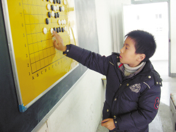

边走边玩的小棋手戴宇轩
#1 边走边玩的小棋手戴宇轩 作者：被感动的人 发表时间：2011-1-22 14:35:23
本文转载自 杰出连珠 ，感谢杰的推荐。
2011年元旦在
宁波
得了
浙江
青少年
五子棋
锦标赛
少年组
冠军
后的一次采访
姓名：戴宇轩
学校：椒江育才小学
年级：四年级
特长：五子棋、围棋、国际象棋、乒乓
获奖情况：浙江省五子棋锦标赛儿童组冠军，浙江省五子棋公开赛青少年组冠军等

有一个棋迷爸爸，戴宇轩从幼儿园开始，就在棋盘上玩耍。纵横交错的棋盘，黑白色的棋子，他小脑袋瓜里一直很奇怪，就这些东西，怎么就能让爸爸枯坐上半天。有一天，爸爸忽然说，“一起玩吧！”从此，他就走入了棋类世界，错综复杂、精彩纷呈。
从象棋到围棋，再到五子棋，得过多次冠军，也数次失手过，他都没放在心上。在他的世界里，比赛也好，学习也好，都是一种轻松逗趣的玩乐。习惯执黑棋的他，只是一个边走边玩的小棋手。
一定要赢过爸爸
戴宇轩的爸爸是个棋迷，从小耳濡目染的他对棋类有着特殊的感情。爸爸心情好的时候，抱着宇轩告诉他象棋盘里帝王将相的厮杀，围棋盘中优雅淡定的气度，他不懂，但听得津津有味。有一天，爸爸忽然想和儿子下一盘棋，儿子输得很惨，有所不服，说一定要赢爸爸。爸爸干脆将他送去棋社学棋。
先学的是围棋，戴宇轩兴趣盎然，总是拖着爸爸下棋。老是输，不甘心，就琢磨爸爸的下棋思路，慢慢地有所领悟。渐渐地，爸爸有所不支，现在，就算是让爸爸3子，他也能赢得游刃有余。或许是“一定要赢爸爸”的信念在，戴宇轩进步很快。参加过几次校内或者全市的比赛，都拿到不错的成绩。经常在网上下，也鲜少棋逢对手。“可能碰到的都是水平普通的，高手都还没对上过。”戴宇轩谦虚地说。
执黑棋的小棋手
五子棋向来是民间非正规的棋类项目，到2006年，才正式立项，制定了严格的规则，属围棋类下的子项目。戴宇轩接触到正规的五子棋的时候，已经是2009年了。“以前也和同学们玩过，觉得很蛮有趣。”戴宇轩说。
上五子棋课的老师不是教师出身，所以很容易和学生们玩在一起，就像朋友一样，将规则和技讲得浅显易懂，戴宇轩学得很快。上课很喜欢和老师互动，下课就在网上到处找人下，吸收大家的经验。值得一提的是，宇轩爸爸为了表示支持，也和他一起学习五子棋，一路伴随成长。
“下五子棋，只要借到一点优势，我就会很高兴。比赛的时候，抓到对方‘禁手’就会赢。”戴宇轩说起经验头头是道。他习惯执黑棋，新规则里，下黑棋的人，可以先下三棋，但是下白棋的人，有“换棋”的决定权。那三棋很关键，下得很有优势，就会被白棋换走，成了自己的劣势；下得毫无优势，也不利于展开手脚。所以要掌握好平衡，既没有明显优势，也没有明显劣势。对于这个“平衡”，戴宇轩很有一套。
2009年的时候，成为浙江省五子棋锦标赛儿童组冠军。2010年，成为浙江省五子棋锦标赛青少年组的冠军。
也有失手的时候，有一次下棋，让他印象很深刻。明明看起来已经是自己的全面优势了，他高兴地“耶、耶”乱叫，一不留神就让对方抓到“禁手”，输了比赛。他痛定思痛，总结了经验，吸取了教训，再也不敢轻敌。说起自己下棋的思路，他概括为会把不优势的局面扳到对
#2 Re:边走边玩的小棋手戴宇轩 作者：被感动的人 发表时间：2011-1-28 9:46:44
照片上好像是在教室里？在上五子棋辅导课？
#3 Re:边走边玩的小棋手戴宇轩 作者：虎年大吉 发表时间：2011-1-29 22:29:11
2009年的时候，成为浙江省五子棋锦标赛儿童组冠军。2010年，成为浙江省五子棋锦标赛青少年组的冠军。
时间错了！
［ 被感动的人 于 2011-1-31 15:49:42 时花20金币送鲜花一朵］
［ 被感动的人 于 2011-1-31 15:49:50 时花20金币送鲜花一朵］
［ 被感动的人 于 2011-1-31 15:50:00 时花20金币送鲜花一朵］
［ 被感动的人 于 2011-1-31 15:50:06 时奖励此帖[金币加 100 威望加1］ 0+1
［此帖子已被 被感动的人 在 2011-1-31 15:50:39 编辑过］
#4 Re:边走边玩的小棋手戴宇轩 作者：被感动的人 发表时间：2011-1-31 15:51:18
谢谢楼上补充资料~#5 Re:边走边玩的小棋手戴宇轩 作者：虎年大吉 发表时间：2011-1-31 20:18:22
2010年的时候，成为第七届浙江省五子棋公开赛儿童组冠军。2011年，成为第二届浙江省青少年五子棋锦标赛少年组的冠军。
［ 被感动的人 于 2011-2-2 14:33:53 时花20金币送鲜花一朵］
［ 被感动的人 于 2011-2-2 14:34:03 时花20金币送鲜花一朵］
［ 被感动的人 于 2011-2-2 14:34:11 时花20金币送鲜花一朵］